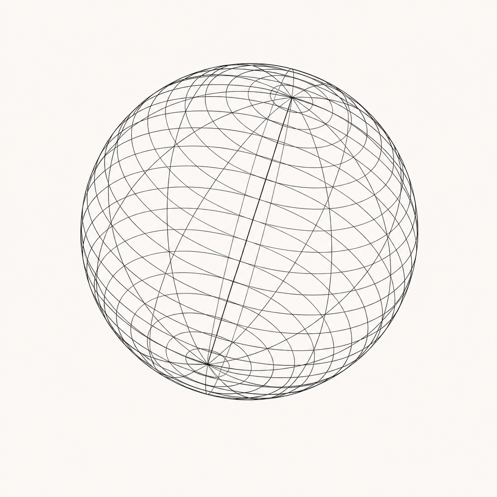

Signal Grid®
112 networks nearbyMatched: 14
Find the best
option for
your space ↘
Ready to map nearby connections.

07.
Signal Grid®
Main settings ↘
Fine-tune the details that help us match a reliable connection.
04.
Signal Grid®
Choose your
plan ↘
Best for home
100 Gb +
An easy, reliable option for browsing, calls and the everyday devices at home.
$3900A flexible monthly connection with setup included.05.
Connection reserved
Your plan is ready.
Starter has been added to your account. We will keep this signal open for 20 minutes.
Scan is ready.